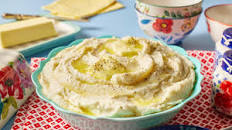

Mashed Potatoes Recipe

Description
These homemade mashed potatoes are perfectly rich and creamy, full of great flavor, easy to make, and always a crowd fave.
Ingredients
- 5 pounds potatoes
- 2 large garlic cloves (minced)
- 6 tablespoons butter
- 4 ounces cream cheese (room temperature)
- Toppings: chopped fresh chives or green onions, freshly-cracked black pepper
Steps
- Cut the potatoes. Feel free to peel your potatoes or leave the skins on. Then cut them into evenly-sized chunks, about an inch or so thick, and transfer them to a large stockpot full of cold water.
- Boil the potatoes. Once all of your potatoes are cut, be sure that there is enough cold water in the pan so that the water line sits about 1 inch above the potatoes. Stir the garlic and 1 tablespoon sea salt into the water. Then turn the heat to high and cook until the water comes to a boil. Reduce heat to medium-high (or whatever temperature is needed to maintain the boil) and continue cooking for about 10-12 minutes, or until a knife inserted in the middle of a potato goes in easily with almost no resistance. Carefully drain out all of the wate
- Prepare your melted butter mixture. Meanwhile, as the potatoes are boiling, heat the butter, milk and an additional 2 teaspoons of sea salt together either in a small saucepan or in the microwave until the butter is just melted. (You want to avoid boiling the milk.) Set aside until ready to use.
- Pan-dry the potatoes. After draining the water, immediately return the potatoes to the hot stockpot, place it back on the hot burner, and turn the heat down to low. Using two oven mitts, carefully hold the handles on the stockpot and shake it gently on the burner for about 1 minute to help cook off some of the remaining steam within the potatoes. Remove the stockpot entirely from the heat and set it on a flat, heatproof surface.
- Mash the potatoes. Using your preferred kind of potato masher (I recommend this one in general, or this one for extra-smooth), mash the potatoes to your desired consistency.
- Stir everything together. Then pour half of the melted butter mixture over the potatoes, and fold it in with a wooden spoon or spatula until potatoes have soaked up the liquid. Repeat with the remaining butter, and then again with the cream cheese, folding in each addition in until just combined to avoid over-mixing. (Feel free to add in more warm milk to reach your desired consistency, if needed.)
- Taste and season. One final time, taste the potatoes and season with extra salt if needed.
- Serve warm. Then serve warm, garnished with gravy or any extra toppings that you might like, and enjoy!